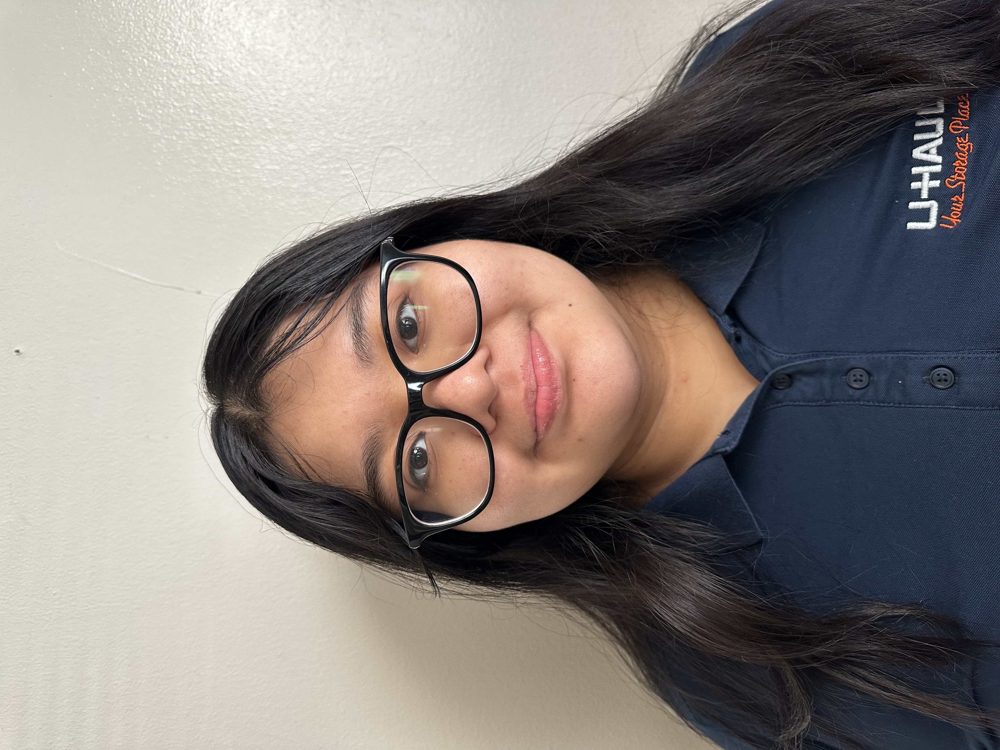
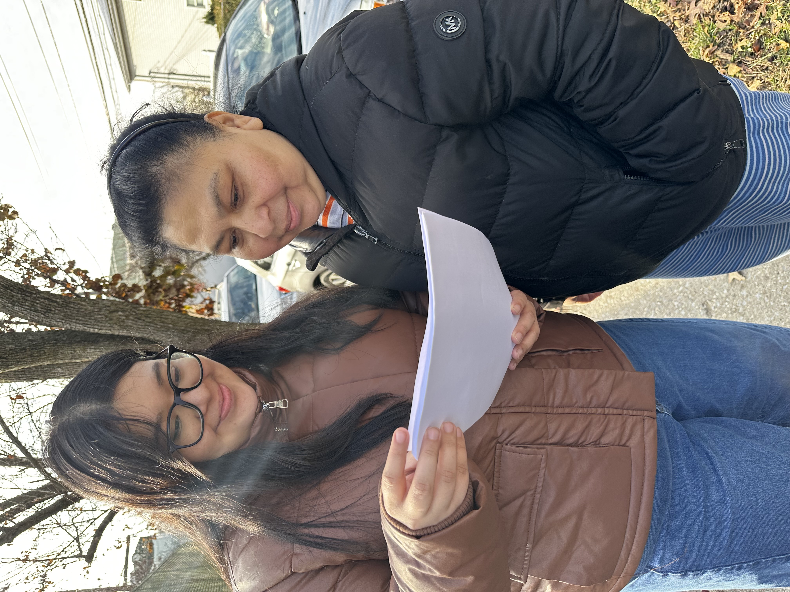

I have experience in customer service, as I have been working as a customer service representative at U-Haul for nearly two years. There, I run daily operations of the center in the General Manager’s absence. Make moment-to-moment decisions to allocate time and resources to appropriate projects via equipment scheduling log. I also make moment-to-moment decisions to allocate time and resources to appropriate projects via equipment scheduling log. Spending a lot of my time at work addressing customer inquiries, resolving issues and educating customers on U-Haul products and services, consistently earning a 90% satisfaction score from in-store customers.

At the age of 16, I was given a great opportunity to participate in a paid internship that would be able to help my local community. My responsibilities included collecting and recording data on community digital access, contributing to the program’s reporting and strategic planning efforts. I also interviewed and surveyed 20+ Yonkers residents to evaluate Wi-Fi access and determine eligibility for low-cost or free internet programs. Analyzed technology inequality across neighborhoods by identifying areas with households lacking reliable internet, guiding targeted outreach and resource allocation to underserved communities.